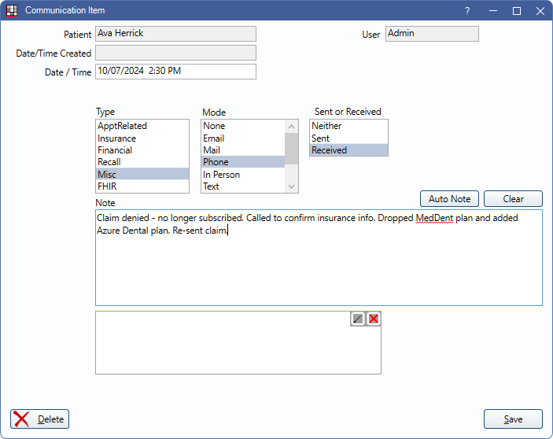

Commlog
The Commlog is a general purpose log of all communications with a patient.
In the Main Toolbar, click Commlog.
Alternatively:
- In the Edit Appointment window, click Comm.
- In the Recall List, click Comm.
- In the Add Family window, click Comm.
A log of all Commlog entries shows in the Account Module, Chart Module (depending on Chart View settings), Edit Appointment, and Recall List.
In some cases, the Commlog window may open automatically to prompt an entry after an action:
- Breaking an appointment. See: Break Appointment.
- Changing status on the Recall List.
- Any trigger event for Automation associated with the CreateCommlog action.
Patient: Read only. Patient associated with the commlog. This is automatically assigned based on the selected patient when creating a new Commlog.
Date/Time Created: System-generated date and time the commlog was created. This field is read-only. This field is blank for Commlogs created prior to version 22.2.1.
Date / Time: Date and time of the commlog. Defaults to the Date/Time the Commlog is first saved, but can be edited. This is the date/time that affects the commlog's placement in the Chart Progress Notes area and Account Communications Log area.
Types: The options shown are those listed in Definitions: Commlog Types. In some areas of Open Dental, a Commlog's default type is set based on where the Commlog is created. Below are the default Commlog types and associated usage types available in Open Dental. Type does not affect sorting of Commlogs. These can be edited in Definitions.
- ApptRelated: Attached to APPT usage type by default.
- Insurance: No default usage type.
- Financial: No default usage type.
- Recall: Attached to RECALL usage type by default.
- Misc: Attached to MISC usage type by default.
- FHIR: Attached to FHIR usage type by default.
Mode: The method of communication. Modes are not customizable.
- None
- Phone
- In Person
- Text
- Email and Text
- Phone and Text
- Fax
Sent or Received: Direction of communication. These options are not customizable.
- Neither
- Sent
- Received
Edit Auto Note: This button only appears if an Auto Notes have been used. Click to complete Auto Note that may have been left unfinished.
Auto Note: Add Auto Notes to the Commlog note text.
Clear: Remove contents of Commlog note.
Note: The Commlog text. This text box supports Right-Click Options.
Signature Box: Enter an Electronic Signature. Saved signatures are cleared if changes are made to a Commlog.
In some cases, a Commlog entry is automatically created after an action:
- Sending individual text messages.
- Sending text messages or printing postcards from the Confirmation List.
- Sending a text message using the Text button from the ASAP List.
Delete: Remove the entire Commlog.
Click Save to keep changes or finish creating a new Commlog .
Automatically Save Commlogs
If the preference, Commlogs Auto Save is enabled, new Commlogs in progress are automatically saved every 10 seconds, if a change was made. Auto Save is only available for newly created Commlogs.
- The date and time in the window title bar indicates when the Commlog was last saved.
- Regardless of if the preference is enabled, Commlogs in progress are automatically saved when Open Dental shuts down unexpectedly (e.g., during an update).
Automatic Commlogs
Automatically-created Commlog entries that are not associated with a user, (i.e., created by the OpenDentalService, eConnector, FHIR, etc.) are previewed as one line of text. Double-click the Commlog to view the entire note.
If sending aggregated Automated Messages, there is a Commlog created for each appointment, even though one text message is sent.
To hide these Commlogs, These commlogs can be hidden in various areas. Show Auto Commlogs in Chart - Show Tab
- In the Account Module, disable Show Automated Commlogs from the Show tab
- In the Chart Module, disable Show Auto Commlogs from the Show Tab
- In the Edit Appointment window, disable Show Automated Commlogs above the Communications Log area.
The setting to show automated commlogs is saved per user.
Navigation
Commlogs can include links to outside sources or other places within the program. Right-click a Commlog from the Progress Notes or Account Module to open a link.
- File Explorer: Opens a folder in the Windows File Explorer.
- UNC paths must end in a file or a backslash. For example \\Server\OpenDentalExports won't work, but \\Server\OpenDentalExports\ or \\Server\OpenDentalExports\File.txt will.
- If a folder name contains punctuation or special characters, the folder may not open.
- PatNum: Select the patient in Open Dental. Enter the patnum immediately after the colon. (e.g. patnum:234)
- TaskNum: Open the associated Task in a new window. Enter the Task number immediately after the colon. (e.g., TaskNum:789)
- Web: Open a URL using the computer's default web browser.
- Wiki: Open the corresponding wiki page. Enter the page name in two brackets (e.g. [[page name]])